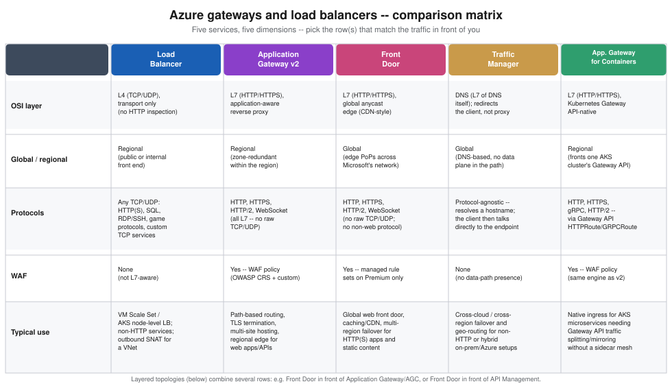

Gateways and Load Balancing
|
This content was generated with the assistance of AI and should be verified against the official documentation before being relied on in production. |
Commands on this page are current for Azure CLI 2.90.0 (checked 2026-09-27); re-verify with az version and the
linked reference pages before relying on them in a pipeline. This is the ★ special-care page for Azure networking
edge services — it goes into more configuration, security, scaling, pricing and troubleshooting detail than most
other pages in this section, comparable to Key Vault and Secrets.
Bookshelf’s public traffic model uses three of the five services covered here at once: Azure Front Door sits at
the global edge in front of everything; catalog-api and orders-api sit behind Application Gateway v2 (with a
WAF policy) inside vnet-bookshelf for path-based routing and TLS termination; and an internal Standard Load
Balancer distributes non-HTTP traffic between `orders-api’s backend VM Scale Set instances where the workload
isn’t containerized. This page starts with the decision tree that picks among these five services (and
Application Gateway for Containers, Bookshelf’s AKS-native alternative to Application Gateway), then covers each
one’s configuration, security, networking, scaling, pricing and troubleshooting in turn, and ends with the layered
topologies that combine them.
Choosing the right gateway or load balancer
Five Azure services answer some version of "route incoming traffic to my backends," and picking the wrong one is the single most common design mistake in this area — Azure Load Balancer cannot inspect HTTP paths or terminate TLS, Front Door and Traffic Manager have no data-plane presence inside a VNet at all, and Application Gateway cannot route non-HTTP protocols or work across regions. The three questions worth asking, in order, are: is the traffic global or does it stay inside one region, is it HTTP(S) or some other protocol, and, if HTTP(S) and global, does it also need edge caching/CDN behavior or just DNS-based failover.

The dashed arrows on the decision tree anticipate Layered topologies: Front Door is frequently the outermost layer, handing traffic down to a regional Application Gateway, Application Gateway for Containers, or API Management rather than being the only gateway in the path.
Azure Load Balancer
Azure Load Balancer is a Layer 4 (TCP/UDP) load balancer: it distributes connections across a backend pool based on a 5-tuple hash (source IP, source port, destination IP, destination port, protocol) and health-probe results, with no visibility into HTTP headers, paths, or cookies. Every Load Balancer today is created as Standard SKU — the Basic SKU stopped accepting new resources on 31 March 2025 and was fully retired on 30 September 2025: a Basic Load Balancer created before that date keeps running but is unsupported and carries no SLA, so any Basic Load Balancer still in use should be upgraded with the documented in-place upgrade guidance rather than treated as a long-term option. Standard adds zone redundancy (a single Standard Load Balancer resource spans availability zones without extra configuration), a default-deny security posture (a Standard Load Balancer’s backend instances get no outbound internet access unless a public IP, NAT gateway, or explicit outbound rule provides it — Basic defaulted to allowing outbound), and a 99.99% SLA.
| Front end | What it’s for |
|---|---|
Public |
A public IP (Standard SKU, static) as the front end — Bookshelf uses this in front of a non-containerized
|
Internal (ILB) |
A private IP inside `vnet-bookshelf’s subnet as the front end, reachable only from within the VNet (or peered VNets/on-premises over VPN/ExpressRoute) — the pattern for load-balancing a database-adjacent tier or an internal service that should never be reachable from the public internet. |
Load-balancing rules map a front-end IP + port to a backend pool + port, each governed by a health probe (TCP, HTTP, or HTTPS) that determines which backend instances currently receive traffic; a distribution mode (5-tuple hash by default, or session persistence pinned to source IP or source IP + protocol) controls whether a given client’s connections always land on the same backend instance. HA Ports is a special rule that load balances every TCP/UDP port at once on a single rule — the pattern for a network virtual appliance or a firewall cluster that needs every port forwarded, rather than a fixed port list.
In the Azure portal
-
Search for Load balancers and select Create.
-
Basics:
$RG, namelb-bookshelf, region, SKU Standard, type Public (or Internal for an ILB). -
Frontend IP configuration: add a frontend IP, choosing or creating a Standard public IP (public) or picking a subnet and static/dynamic private IP (internal).
-
Backend pools: add a pool, associating it with `orders-api’s VM Scale Set (or a set of NICs/IPs).
-
Inbound rules: add a load-balancing rule binding the frontend IP + port to the backend pool + port, and select or create a health probe; enable HA Ports instead of a fixed port if the appliance/protocol needs every port forwarded. Set Outbound source network address translation (SNAT) to Use outbound rules (the recommended option), because the outbound rule below reuses the same frontend IP and backend pool, and Azure rejects that combination unless the load-balancing rule disables its own outbound SNAT.
-
Outbound rules (public Load Balancer only): add an explicit outbound rule, or attach a NAT gateway, so backend instances retain outbound internet access — Standard grants none by default.
With the Azure CLI
az network public-ip create \
--resource-group "$RG" \
--name pip-lb-bookshelf \
--sku Standard \
--allocation-method Static \
--zone 1 2 3
az network lb create \
--resource-group "$RG" \
--name lb-bookshelf \
--sku Standard \
--public-ip-address pip-lb-bookshelf \
--frontend-ip-name fe-orders-api \
--backend-pool-name bp-orders-api
az network lb probe create \
--resource-group "$RG" \
--lb-name lb-bookshelf \
--name probe-orders-api \
--protocol Tcp \
--port 8080
az network lb rule create \
--resource-group "$RG" \
--lb-name lb-bookshelf \
--name rule-orders-api \
--protocol Tcp \
--frontend-port 8080 \
--backend-port 8080 \
--frontend-ip-name fe-orders-api \
--backend-pool-name bp-orders-api \
--probe-name probe-orders-api \
--disable-outbound-snat true
# Standard SKU grants no outbound internet access by default -- add an explicit outbound rule
az network lb outbound-rule create \
--resource-group "$RG" \
--lb-name lb-bookshelf \
--name outbound-orders-api \
--frontend-ip-configs fe-orders-api \
--backend-pool-name bp-orders-api \
--protocol All \
--idle-timeout 4--disable-outbound-snat true on the load-balancing rule is required here: the outbound rule references the same
frontend IP configuration and backend pool, and Azure refuses a load-balancing rule that still performs its own
default outbound SNAT for a frontend an outbound rule already uses.
Security and networking
A public Load Balancer’s front end is only as exposed as the NSG rules on its backend instances' subnet/NICs — the Load Balancer resource itself has no security-rule concept of its own, so an NSG allowing the service port
from Internet (or a narrower source) is still required. An internal Load Balancer’s front end is a private IP,
so it inherits whatever NSG and route-table rules already govern that subnet — see
Identity and Access for how Bookshelf assigns network access more broadly. Standard Load
Balancer supports availability zones two ways: zone-redundant (one front-end IP, resilient to a single zone’s
failure) or zonal (pinned to one specific zone, for a topology that wants explicit per-zone front ends).
Scaling
Azure Load Balancer itself has no capacity unit to provision or scale — it is a fully managed, regional service
that scales automatically with the size of the backend pool and traffic volume; the only thing that scales
explicitly is the backend pool itself (a VM Scale Set’s instance count, or Kubernetes node count when a Load
Balancer fronts an AKS Service of type LoadBalancer).
Pricing model
Standard Load Balancer bills per hour for each load-balancing rule configured (the first five rules are typically included on public and internal Load Balancers of certain configurations — check current inclusions) plus a per-GB charge for data processed; an internal-only Load Balancer with no public IP has no separate public-IP charge, while a public Load Balancer’s public IP itself bills separately as a Standard public IP resource. Current rates are on the Load Balancer pricing page.
Application Gateway v2 and WAF policy
Application Gateway is a Layer 7 (HTTP/HTTPS) reverse proxy and load balancer: it terminates client TLS
connections, inspects the request line and headers, and routes based on path or host rather than only IP and
port. Every deployment today should use the v2 SKU (Standard_v2 or WAF_v2) — v1 (Standard/WAF,
without the _v2 suffix) was announced for retirement on 28 April 2023 and retires on 28 April 2026, after
which Microsoft no longer supports v1 resources at all; any remaining v1 gateway should be migrated well ahead of
that date using the documented v1-to-v2 migration path, since there is no in-place SKU change. v2 adds autoscaling
(a min/max instance-count range rather than a fixed Capacity Units count), zone redundancy, faster provisioning
and updates, and a static front-end public IP.
Object model: listeners, rules, backend pools, HTTP settings, probes
An Application Gateway is assembled from the same handful of object types regardless of how simple or complex the routing gets:
- Frontend IP / listener
-
A listener binds a front-end IP + port + protocol (HTTP or HTTPS) and, for HTTPS, a TLS certificate; a multi-site listener additionally matches on host header, letting one gateway answer for several hostnames (
shop.bookshelf.example,api.bookshelf.example) on the same port. - Backend pool
-
A named group of backend targets — IP addresses, FQDNs, a VM Scale Set, or (via the
BackendAddressPoolAPI) a Container Apps or App Service backend — that a routing rule sends matched traffic to. - HTTP settings
-
Per-backend-pool connection behavior: backend protocol and port, cookie-based session affinity, connection draining, request timeout, and the custom probe to use for backend health, plus (Bookshelf uses this against `catalog-api’s Container Apps ingress) whether to trust the backend’s own TLS certificate or pin a specific root CA when backend TLS re-encryption is enabled.
- Health probes
-
HTTP/HTTPS requests Application Gateway itself issues against each backend on an interval, independent of any platform-level health check the backend already has (Container Apps' own liveness probe, for instance) — a backend only receives traffic once its Application Gateway probe reports healthy.
- Routing rule
-
Ties a listener to either one backend pool + HTTP settings pair (basic) or a path-based rule collection that maps URL path patterns (
/api/,/images/) to different backend-pool/HTTP-settings pairs under the same listener — the mechanism Bookshelf uses to send/api/*tocatalog-api’s backend pool and everything else to the static-site/`orders-apipool on one shared hostname. - TLS termination
-
The listener holds the TLS certificate (from Key Vault, see below) and terminates client TLS at the gateway; traffic to the backend then runs either as plain HTTP (simplest, and fine inside a private VNet) or re-encrypted HTTPS (end-to-end TLS, required when compliance mandates encryption all the way to the backend).
In the Azure portal
-
Search for Application gateways and select Create.
-
Basics:
$RG, nameagw-bookshelf, tier WAF V2 (or Standard V2 without managed WAF rules), autoscaling min 2 / max 10 instances, availability zones 1,2,3, and the virtual network/subnet (vnet-bookshelf/snet-appgw, a dedicated subnet Application Gateway requires). -
Frontends: add a Public frontend IP (or Private for an internal gateway).
-
Backends: add
bp-catalog-api(target:catalog-api’s Container Apps FQDN) and `bp-orders-api. -
Configuration: add a routing rule — listener (hostname, port 443, upload the TLS certificate or reference a Key Vault secret), then under Path-based routing add
/api/*→bp-catalog-apiand the default path →bp-orders-api, each with its own HTTP settings and health probe. -
Tags → Review + create → Create.
-
To attach a WAF policy: open
agw-bookshelf→ Web application firewall → associate an existing WAF policy (created separately, see below) or create one inline.
With the Azure CLI
export AGW=agw-bookshelf
az network vnet subnet create \
--resource-group "$RG" \
--vnet-name vnet-bookshelf \
--name snet-appgw \
--address-prefixes 10.1.20.0/24
az network public-ip create \
--resource-group "$RG" \
--name pip-agw-bookshelf \
--sku Standard \
--allocation-method Static
az network application-gateway create \
--resource-group "$RG" \
--name "$AGW" \
--location "$LOCATION" \
--sku WAF_v2 \
--min-capacity 2 \
--max-capacity 10 \
--zones 1 2 3 \
--vnet-name vnet-bookshelf \
--subnet snet-appgw \
--public-ip-address pip-agw-bookshelf \
--priority 100 \
--servers "$(az containerapp show --name catalog-api --resource-group "$RG" --query properties.configuration.ingress.fqdn -o tsv)" \
--http-settings-protocol Https \
--http-settings-port 443--priority on the initial rule became mandatory in late 2021 (lower numbers evaluate first) — omitting it on
az network application-gateway create fails on current CLI versions. The top-level create call sets up only
a single default rule, built from objects with fixed default names: backend pool appGatewayBackendPool, HTTP
settings appGatewayBackendHttpSettings, listener appGatewayHttpListener, and rule rule1. Path-based routing
across several backend pools needs every additional pool, probe, HTTP settings, and URL path map created with the
az network application-gateway address-pool/probe/http-settings/url-path-map subcommands, and then rule1
switched to the path map.
address-pool create --servers only accepts IP addresses or FQDNs, so orders-api’s VM Scale Set is not added
through it. The pool is created empty, and the scale set joins it from its own side, by adding the pool’s ID to
the scale set’s NIC IP configuration (`applicationGatewayBackendAddressPools) and rolling that model change out
to the existing instances.
# Backend pools: catalog-api by FQDN, orders-api empty (the VMSS joins it below)
az network application-gateway address-pool create \
--resource-group "$RG" \
--gateway-name "$AGW" \
--name bp-catalog-api \
--servers "$(az containerapp show --name catalog-api --resource-group "$RG" --query properties.configuration.ingress.fqdn -o tsv)"
az network application-gateway address-pool create \
--resource-group "$RG" \
--gateway-name "$AGW" \
--name bp-orders-api
# Attach vmss-orders-api to bp-orders-api through its NIC IP configuration, then update existing instances
az vmss update \
--resource-group "$RG" \
--name vmss-orders-api \
--add virtualMachineProfile.networkProfile.networkInterfaceConfigurations[0].ipConfigurations[0].applicationGatewayBackendAddressPools \
id="$(az network application-gateway address-pool show --resource-group "$RG" --gateway-name "$AGW" --name bp-orders-api --query id -o tsv)"
az vmss update-instances \
--resource-group "$RG" \
--name vmss-orders-api \
--instance-ids "*"
# Health probes
az network application-gateway probe create \
--resource-group "$RG" \
--gateway-name "$AGW" \
--name probe-catalog-api \
--protocol Https \
--host-name-from-http-settings true \
--path /actuator/health
az network application-gateway probe create \
--resource-group "$RG" \
--gateway-name "$AGW" \
--name probe-orders-api \
--protocol Http \
--host 127.0.0.1 \
--path /actuator/health
# HTTP settings, each bound to its probe
az network application-gateway http-settings create \
--resource-group "$RG" \
--gateway-name "$AGW" \
--name hs-catalog-api \
--protocol Https \
--port 443 \
--host-name-from-backend-pool true \
--probe probe-catalog-api
az network application-gateway http-settings create \
--resource-group "$RG" \
--gateway-name "$AGW" \
--name hs-orders-api \
--protocol Http \
--port 8080 \
--probe probe-orders-api
# URL path map: /api/* -> catalog-api, everything else -> orders-api
az network application-gateway url-path-map create \
--resource-group "$RG" \
--gateway-name "$AGW" \
--name pathmap-bookshelf \
--rule-name api \
--paths "/api/*" \
--address-pool bp-catalog-api \
--http-settings hs-catalog-api \
--default-address-pool bp-orders-api \
--default-http-settings hs-orders-api
# Switch the default rule from Basic to path-based routing
az network application-gateway rule update \
--resource-group "$RG" \
--gateway-name "$AGW" \
--name rule1 \
--rule-type PathBasedRouting \
--url-path-map pathmap-bookshelf--host-name-from-http-settings true on probe-catalog-api reuses the catalog-api FQDN that hs-catalog-api
picks from its backend pool (--host-name-from-backend-pool true). Container Apps ingress routes on the Host
header, so the probe and the forwarded request both need that FQDN rather than an IP address.
WAF policy
A WAF policy (a separate resource, az network application-gateway waf-policy, shared with Front Door’s own WAF
resource type in name only — the two are not interchangeable) attaches managed rule sets (the OWASP Core Rule
Set, currently 3.2 alongside the newer Microsoft Default Rule Set, plus the Bot Manager Rule Set) and custom
rules (match conditions plus allow/block/log, and rate-limiting) to one or more listeners, in Detection or
Prevention mode. There are two ways a WAF policy has historically been configured, and one of them is retiring:
WAF configuration — a legacy, inline set of WAF settings on the Application Gateway resource itself
(`WAF_v2’s older configuration surface, distinct from the modern policy object) — stopped accepting new
deployments from 15 March 2025 and retires on 15 March 2027; every gateway should already be using (or should
migrate to) the modern, standalone WAF policy resource described here, which is also the only surface that
supports per-URI/per-listener rule exclusions and Bot Manager.
In the Azure portal
-
Search for WAF policies and select Create, choosing Regional (Application Gateway) as the policy type.
-
Policy settings: name
waf-appgw-bookshelf, mode Prevention (or Detection while tuning). -
Managed rules: add the OWASP Default Rule Set (3.2) and, if desired, the Bot Manager Rule Set.
-
Custom rules: add a rate-limit rule against
/api/orders, same shape as the Front Door example on Front Door and CDN. -
Association: attach the policy to `agw-bookshelf’s listener(s).
With the Azure CLI
az network application-gateway waf-policy create \
--resource-group "$RG" \
--name waf-appgw-bookshelf
az network application-gateway waf-policy managed-rule rule-set add \
--resource-group "$RG" \
--policy-name waf-appgw-bookshelf \
--type OWASP \
--version 3.2
az network application-gateway waf-policy policy-setting update \
--resource-group "$RG" \
--policy-name waf-appgw-bookshelf \
--mode Prevention \
--state Enabled
az network application-gateway update \
--resource-group "$RG" \
--name "$AGW" \
--set firewallPolicy.id="$(az network application-gateway waf-policy show --resource-group "$RG" --name waf-appgw-bookshelf --query id -o tsv)"Security and networking
Application Gateway v2 requires a dedicated subnet (no other resource type may share it) with at least a /26
prefix reserved for the autoscaling instance range. TLS certificates are best supplied via a user-assigned
managed identity referencing a Key Vault secret (--identity on the listener/HTTPS-settings, pointed at
kv-bookshelf) rather than uploaded PFX bytes, so certificate rotation in Key Vault (see
Key Vault and Secrets) is picked up without redeploying the gateway. NSGs on the
snet-appgw subnet must allow inbound 65200-65535 from GatewayManager (Azure’s own control-plane
communication with the gateway instances) in addition to the actual listener ports, or the gateway reports an
unhealthy/degraded state.
Scaling
v2’s autoscaling range (--min-capacity/--max-capacity, in Capacity Units, one CU roughly equating to a mix
of compute, throughput and connection count) lets the gateway grow and shrink with load automatically — 0
min-capacity is not allowed; the practical floor is effectively 1-2 instances-worth of capacity to keep the
gateway warm for a traffic spike. Zone redundancy (--zones 1 2 3) spreads gateway instances across availability
zones so a single zone’s failure does not remove all capacity at once.
Pricing model
v2 bills a fixed hourly gateway* charge for the minimum instance count plus a per-Capacity-Unit-hour charge for whatever capacity is actually running above that floor, plus a WAF surcharge when a WAF-capable SKU/policy is attached; there is no separate charge for the rules engine, path-based routing, or multi-site listeners themselves. Current rates are on the Application Gateway pricing page.
References: Microsoft Learn — What is Azure Application Gateway v2?, Microsoft Learn — We’re retiring Application Gateway v1, Microsoft Learn — FAQ on v1 retirement, Microsoft Learn — Upgrade to Azure Application Gateway WAF policy, Microsoft Learn — Application Gateway configuration overview, Microsoft Learn — Scaling and zone redundancy, Azure Application Gateway pricing.
Application Gateway for Containers (summary)
Application Gateway for Containers (AGC) is a separate, Kubernetes-native load-balancing service — distinct from
classic Application Gateway despite the shared name — that a cluster-installed ALB Controller add-on drives
from standard Kubernetes Gateway API resources (Gateway, HTTPRoute, GRPCRoute) rather than from
Application Gateway’s own listener/rule object model. It reached general availability for Azure Global in
February 2024 and continues to gain features (an inference-gateway capability entered public preview in 2026),
but it is a fundamentally different operating model from Application Gateway v2: configuration lives as
Kubernetes manifests applied with kubectl/Helm/GitOps, not as az network application-gateway resources, and
it is the option to reach for specifically when the backend is an AKS cluster’s own Gateway API-managed traffic
(weighted traffic splitting for canary releases, header-based routing, mirroring) rather than a VM Scale Set,
Container Apps, or an on-premises target. Bookshelf’s full AGC walkthrough — installing the ALB Controller,
defining a Gateway and HTTPRoute for catalog-api/orders-api, and wiring TLS from kv-bookshelf — lives on
Deploying Microservices on AKS, since it only makes sense in the context of that page’s Gateway API and
Istio material; this page exists to place AGC correctly in the decision tree above rather than repeat that
content.
Front Door (summary)
Azure Front Door is the global, HTTP(S)-only edge tier: an anycast network of Points-of-Presence that terminates client connections close to the user, then forwards to whichever origin (Application Gateway, Container Apps, Blob Storage, API Management, an on-premises endpoint over Private Link, and more) is healthiest and best positioned for that request, adding CDN-style caching, a rules engine, and — on Premium — managed WAF rule sets and Private Link origins along the way. Front Door’s own retirement history (CDN Standard from Akamai/Edgio, CDN classic, Front Door classic), Standard vs. Premium, the profile/endpoint/origin-group/route object model, caching behavior, the rules engine, custom domains, WAF, Private Link origins, observability and pricing are all covered in full on Front Door and CDN — this page only places Front Door in the decision tree (Choosing the right gateway or load balancer) and the layered topologies below, rather than repeating that page’s depth.
Traffic Manager
Traffic Manager is a DNS-based traffic router: it never sits in the data path at all. A client resolves a Traffic Manager DNS name, Traffic Manager’s name servers return the IP/hostname of whichever endpoint the chosen routing method picks, and the client then connects to that endpoint directly — which is exactly why Traffic Manager works for any protocol (it never inspects the traffic itself, only answers a DNS query) but also why its failover reaction time is bounded by DNS TTL and client/resolver caching, not by an in-path health check reacting instantly. Traffic Manager supports six routing methods:
| Method | Behavior |
|---|---|
Priority |
One primary endpoint takes all traffic; Traffic Manager fails over to the next-priority backup endpoint only
when the primary’s health check fails. Bookshelf’s cross-region disaster-recovery setup (an active |
Weighted |
Traffic is distributed across endpoints proportionally to an assigned weight — equal weights split evenly, the pattern for a staged rollout of a new region’s capacity. |
Performance |
Routes each DNS query to whichever healthy endpoint has the lowest network latency from the querying resolver’s location, using Microsoft’s own latency-measurement tables — the closest-endpoint pattern for a globally distributed audience. |
Geographic |
Routes based on the geographic origin of the DNS query (country/region, or a broader region grouping), for data residency or content-localization requirements rather than pure latency. |
Multivalue |
Only valid when every endpoint is an IPv4/IPv6 address (not an Azure or external hostname endpoint): returns every currently healthy endpoint’s address in one DNS response, letting the client itself pick (or retry across) one — useful for a client stack that already does its own client-side load balancing. |
Subnet |
Maps ranges of client IP addresses to a specific endpoint, for a topology that needs deterministic routing per client network (e.g. a partner’s known egress range always reaching a specific region). |
In the Azure portal
-
Search for Traffic Manager profiles and select Create.
-
Name it
tm-bookshelf(this becomes part of the DNS nametm-bookshelf.trafficmanager.net), choose a Routing method from the table above, and pick$RG. -
Open the profile → Endpoints → Add, choosing endpoint type Azure endpoint (a Front Door profile, Public IP, App Service, or similar) or External endpoint (an FQDN/IP outside Azure, including on-premises), and set its priority/weight as the chosen routing method requires.
-
Configuration tab: set the DNS TTL and the health-check protocol/path/interval used to mark an endpoint unhealthy.
With the Azure CLI
az network traffic-manager profile create \
--resource-group "$RG" \
--name tm-bookshelf \
--routing-method Priority \
--unique-dns-name tm-bookshelf \
--ttl 30 \
--protocol Https \
--port 443 \
--path /actuator/health
az network traffic-manager endpoint create \
--resource-group "$RG" \
--profile-name tm-bookshelf \
--name primary-eastus2 \
--type externalEndpoints \
--target catalog-api.eastus2.example.com \
--priority 1
az network traffic-manager endpoint create \
--resource-group "$RG" \
--profile-name tm-bookshelf \
--name standby-westus2 \
--type externalEndpoints \
--target catalog-api.westus2.example.com \
--priority 2Security, scaling and pricing
Traffic Manager has no data-plane security surface of its own (no WAF, no TLS termination — it never sees request bodies or headers) beyond the DNS query itself; the TLS/WAF posture is entirely down to whatever endpoints it points at. It requires no capacity planning or scaling configuration — it is a fully managed, global DNS service that scales automatically with query volume — and bills per DNS query received plus a small per-profile monthly charge for real-user-measurements-based health checks, both detailed on the Traffic Manager pricing page.
Layered topologies
These five services are routinely combined rather than used one at a time. Bookshelf uses both topologies below for different parts of its traffic.
Front Door → Application Gateway/AGC → services puts Front Door’s global edge (caching, managed WAF rule
sets, custom domains) in front of a regional Application Gateway or Application Gateway for Containers instance
that does the finer-grained, VNet-local path-based routing and TLS re-encryption to Bookshelf’s own services — Front Door’s origin, in this case, is the Application Gateway’s public front-end IP or (Premium tier) a Private
Link connection into the VNet, exactly as Front Door and CDN's Private Link origins
section describes for a Container Apps origin. Front Door → API Management → backends instead puts Front
Door in front of an API Management gateway when partner/external API consumers need API Management’s product
catalog, subscription keys, and policy pipeline (rate limiting, validate-jwt, request/response transformation) — Front Door still contributes global caching, WAF, and custom-domain termination, but every API-specific
concern (versions, revisions, developer portal) is API Management’s job, not Front Door’s or Application
Gateway’s. The general case for putting any gateway in front of a set of backend services — not just these two
Azure-specific layerings — is covered architecturally on
API Gateway and Backends for Frontends, including when to split a single
gateway into several client-specific backends-for-frontends; this page’s layerings are the Azure-specific
instantiation of that same idea.
Troubleshooting
-
An Application Gateway backend pool shows "Unhealthy" — almost always the custom health probe’s path/port/ protocol not matching what the backend actually serves (the same mistake called out for Front Door on Front Door and CDN);
az network application-gateway show-backend-healthshows the exact probe result and HTTP status code per backend instance. -
A gateway reports "degraded" provisioning state with no obvious configuration error — check the dedicated subnet’s NSG for a missing
GatewayManagerinbound allow rule on65200-65535; Application Gateway needs that range open for its own control-plane management traffic, and a restrictive custom NSG is the most common cause. -
A Standard Load Balancer’s backend VM Scale Set instances have no outbound internet access — expected: Standard SKU grants none by default (unlike Basic); add an explicit outbound rule or attach a NAT gateway to the subnet.
-
Traffic Manager keeps sending traffic to an endpoint that is actually down — check the DNS TTL and confirm clients/resolvers aren’t caching a stale answer past it; also confirm the endpoint’s health-check protocol/path matches something the endpoint actually serves, and that the health-check degraded threshold hasn’t been set so high that a real outage takes longer than expected to register.
-
A WAF policy blocks legitimate traffic on Application Gateway — run the policy in Detection mode first, read the matched rule ID from the WAF diagnostic log, and add a targeted rule exclusion rather than disabling the whole managed rule set, exactly as described for Front Door’s WAF on Front Door and CDN.
-
A v1 Application Gateway or a WAF-configuration-based policy is still in use close to its retirement date — plan the v1-to-v2 (or WAF-configuration-to-WAF-policy) migration well ahead of 28 April 2026 / 15 March 2027 respectively; both migrations are one-way and Microsoft’s own migration tooling does not run automatically.
Clean up
az group delete --name "$RG" --yes --no-waitEvery resource on this page — Load Balancer, Application Gateway (and its WAF policy), and Traffic Manager — bills only while it exists; none of them has a Key-Vault-style soft-delete concern, so deleting $RG (or the
individual resource) stops billing immediately with nothing left to purge. A WAF policy created in a different
resource group than $RG (as front-door-and-cdn.adoc’s `wafbookshelf example does for its own Front Door WAF
policy) needs its own az network application-gateway waf-policy delete/az network front-door waf-policy delete
once nothing references it any more. A Traffic Manager profile’s DNS name (tm-bookshelf.trafficmanager.net) is
released back to the global namespace as soon as the profile is deleted, with no retention window.
Related pages
-
Front Door and CDN — Front Door’s full object model, caching, rules engine, WAF, Private Link origins, observability and pricing.
-
Deploying Microservices on AKS — the full Application Gateway for Containers/ALB Controller walkthrough, alongside AKS’s other Gateway API and Istio ingress options.
-
API Gateway and Backends for Frontends — the general API gateway and backends-for-frontends pattern this page’s Azure-specific layered topologies instantiate.
-
Key Vault and Secrets — storing and rotating the TLS certificates Application Gateway listeners and Front Door custom domains consume.
-
Identity and Access — NSGs, subnets, and managed identities referenced throughout this page’s security sections.
References
-
Microsoft Learn — Combining load-balancing services in Azure
-
Microsoft Learn — Application Gateway configuration overview
-
Microsoft Learn — az network application-gateway command reference
-
Microsoft Learn — Direct web traffic with Application Gateway — Azure CLI
-
Microsoft Learn — Create an Application Gateway with path-based routing rules
-
Microsoft Learn — Upgrade to Azure Application Gateway WAF policy
-
Microsoft Learn — az network application-gateway waf-policy command reference
-
Microsoft Learn — What is Application Gateway for Containers?
-
Microsoft Learn — Frequently asked questions about Application Gateway for Containers
-
Microsoft Learn — az network traffic-manager command reference
-
Microsoft Learn — Create a Traffic Manager profile using the Azure CLI
-
Microsoft Learn — Multi-region Application Gateway behind Front Door
-
Microsoft Learn — Troubleshoot a degraded Traffic Manager profile